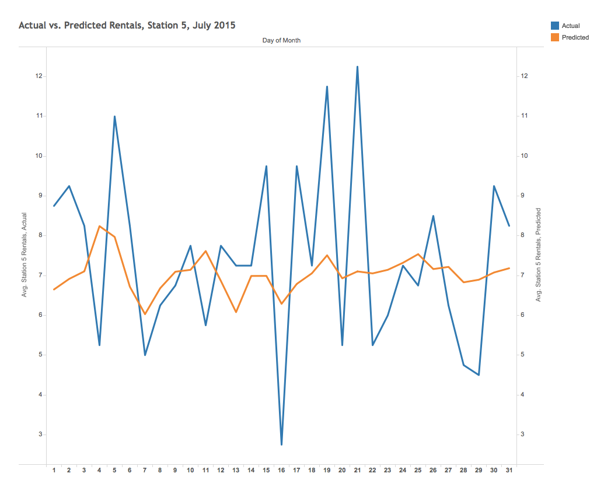

The Model
Our final model is a random forest of 500 trees and a minimum of 25 samples per leaf node to combat overfitting, trained via bootstrap sampling (L. Brieman, “Random Forests,” Machine Learning, 45(1), 5-32, 2001). This algorithm is fairly robust to noise and, perhaps more importantly, does well at picking up interactions between predictor variables. The importance of the latter point is easy to grasp intuitively, since one can imagine that rentals at a station near the lakefront on a warm weekend day in August will be higher than the individual predictors would suggest independently of one another.
Our model is overall fairly accurate, with a mean absolute error of ~1.8 rentals per three-hour period and a mean-squared error of ~13.5. It is important to note, however, that these are average errors, and the model may be less accurate during periods of particularly high demand and/or when weather forecasts do not match actual weather patterns. We trained the model on a randomly selected subset of 70% of the data, tested on the remaining 30%, and verified our results using five-fold cross-validation. The r-squared is ~0.80, meaning that the model explains about 80% of the variation in rentals.
Weather variables proved to be the most important features determining rentals, especially temperature and precipitation. Station location, the day of week, and the time of day also factor into the model, but to a lesser extent than weather.

In addition to the random forest, we also attempted a simple OLS regression and a gradient boosting machine (J. Friedman, Greedy Function Approximation: A Gradient Boosting Machine, The Annals of Statistics, Vol. 29, No. 5, 2001). The linear regression performed relatively poorly, with a mean-absolute error of ~3.7 rentals, a mean-squared error of ~53.9, and an r-squared of ~0.18. The GBM (boosting stages: 1000, learning rate: 0.01, maximum depth: 6, minimum samples per leaf node: 25) performed slightly worse than the random forest but better than the OLS regression, with a mean-absolute error of ~2.2, a mean-squared error of ~20.2, and an r-squared of 0.70.
| Algorithm |
Mean-absolute error |
Mean-squared error |
R-squared |
| Random Forest |
1.75 |
13.54 |
0.80 |
| Gradient Boosting Machine |
2.21 |
20.15 |
0.70 |
| OLS Regression |
3.72 |
53.90 |
0.18 |
In order to better understand the accuracy of our model, let’s take a look at predictions for a typical station in the month of July. Station 5 is a busy station located at the intersection of S. State and W. Harrison Sts., just west of Buckingham Fountain and the Magnificent Mile. We can see that in 2015, average rentals for a three-hour period ranged from a daily low of about 3 to a daily high around 12. Our model does a reasonable job of minimizing overall error, but fails to capture much of the volatility. Still, it is off by more than 3 rentals on only a few days of the month.
